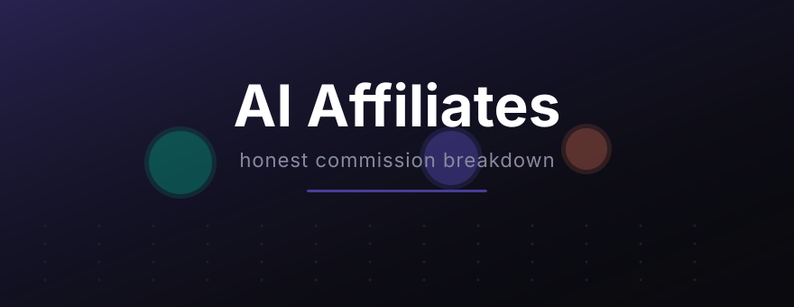

March 07, 2026I've signed up for probably a dozen AI affiliate programs at this point. Some of them are great. Most of them are mediocre. A couple are borderline scams with cookie durations so short you'd need someone to click and buy within the same sitting.
Here's what I've actually found worth promoting, ranked by how much I'd realistically expect to earn from them. Not theoretical "if you get 10,000 clicks" math — practical, small-audience numbers.
50% recurring commission. Let that sink in. Half of every monthly payment, forever, for every person you refer. The cookie lasts 90 days, and the payout threshold is just $5, so you're not waiting months to see your first check.
The reason this converts so well: people already use Notion. Millions of them. When you tell a Notion user "hey, the AI add-on is $10/month and it basically writes your meeting notes for you," that's not a hard sell. They're already in the app.
I made my first commission from Notion within two weeks of signing up. It was $5. Not life-changing, but it proved the model works without a massive audience.
45% commission on the first year of any subscription. That's significant money on their pro plans ($36/month = about $194 commission per annual signup). The problem? It's only first-year. After that, your referral keeps paying Copy.ai and you get nothing.
Still worth promoting because the initial payout is solid. If someone signs up for the annual plan through your link, that's a real chunk of money for a single referral. I'd just rather have Notion's forever-recurring model.
Their cookie is 60 days, which is fine. Most people who are shopping for AI writing tools make a decision within a week or two anyway.
30% recurring lifetime commission. Sounds great on paper. The catch: $100 minimum payout threshold. If you're getting one or two signups a month at lower-tier plans, you might wait 3-4 months before you actually get paid.
The product itself is solid for long-form content generation. Works in multiple languages, which means you can promote it to non-English audiences (most AI affiliate content is English-only, so there's less competition in other markets). Something to think about if you have an international following.
I haven't earned enough from Writesonic yet to give a real income report. It's in the "slow build" category for me.
20% recurring on a product that costs $22-67/month depending on the plan. The commission rate is lower than the text tools, but the ticket price is higher, so the math can work out.
The pitch: "make professional videos without a camera, actors, or editing skills." That resonates hard with small business owners who know they need video content but can't afford (or don't want to deal with) production. I've seen the best conversion rates when promoting this to LinkedIn audiences specifically.
Fair warning: Synthesia's affiliate program has a manual approval process. Took me about a week to get accepted. They want to see your content before they let you promote.
30% one-time commission for AI-generated professional headshots. Everyone on LinkedIn needs one, the service is $29-69, and people buy it impulsively. I've seen people promote this with a simple "I got mine for $29 instead of paying a photographer $200" post and get clicks.
The downside is obvious: one-time payment. No passive income. You promote it, make the sale, and that's it. I think of it as a quick-win product to sprinkle into content, not a primary income source.
Don't spread yourself thin across fifteen programs. Pick two, maybe three, and create genuinely useful content around those products. I'm currently focused on Notion AI (best recurring model) and occasionally mention the others when they fit naturally into what I'm writing about.
The biggest mistake I see affiliate marketers make: writing "Top 10 AI Tools" posts that are obviously just commission grabs with no real opinion. People can smell that from a mile away. If you haven't actually used the product, don't write about it. Readers know, and Google knows too.
This post contains affiliate links. If you sign up through them, I earn a commission at no extra cost to you.